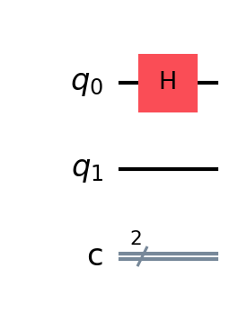
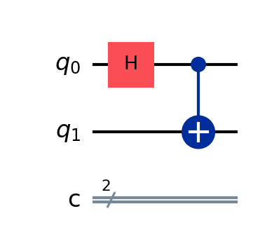
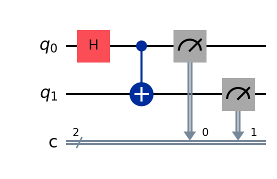

Bell State Circuit Simulator
Overview
This script demonstrates the creation and simulation of a Bell state using Qiskit's local simulator (Aer).
Mathematical Foundation
A Bell state (specifically, the Φ⁺ state) is represented as:
$$|\Phi^+\rangle = \frac{1}{\sqrt{2}}(|00\rangle + |11\rangle)$$Where:
- $|00\rangle$ represents both qubits in the 0 state
- $|11\rangle$ represents both qubits in the 1 state
- $\frac{1}{\sqrt{2}}$ is the normalization factor
1. Hadamard Gate
Hadamard Operation
The Hadamard gate (H) transforms the basis states:
$$H = \frac{1}{\sqrt{2}}\begin{pmatrix} 1 & 1 \\ 1 & -1 \end{pmatrix}$$Actions on basis states:
$$H|0\rangle = \frac{1}{\sqrt{2}}(|0\rangle + |1\rangle)$$ $$H|1\rangle = \frac{1}{\sqrt{2}}(|0\rangle - |1\rangle)$$Applied to initial state $|0\rangle$, the system becomes:
$$|\psi_1\rangle = \frac{1}{\sqrt{2}}(|0\rangle + |1\rangle) \otimes |0\rangle = \frac{1}{\sqrt{2}}(|00\rangle + |10\rangle)$$2. CNOT Gate
CNOT Operation
The CNOT gate matrix:
$$CNOT = \begin{pmatrix} 1 & 0 & 0 & 0 \\ 0 & 1 & 0 & 0 \\ 0 & 0 & 0 & 1 \\ 0 & 0 & 1 & 0 \end{pmatrix}$$Action on the state after Hadamard:
$$CNOT(\frac{1}{\sqrt{2}}(|00\rangle + |10\rangle)) = \frac{1}{\sqrt{2}}(|00\rangle + |11\rangle)$$This creates the Bell state $|\Phi^+\rangle$, where measuring one qubit instantly determines the state of the other.
3. Measurement
Measurement Mathematics
For the Bell state $|\Phi^+\rangle = \frac{1}{\sqrt{2}}(|00\rangle + |11\rangle)$:
- $P(00) = |\langle 00|\Phi^+\rangle|^2 = \frac{1}{2}$
- $P(11) = |\langle 11|\Phi^+\rangle|^2 = \frac{1}{2}$
- $P(01) = P(10) = 0$
Measurement operators in computational basis:
$$P_0 = |0\rangle\langle 0| = \begin{pmatrix} 1 & 0 \\ 0 & 0 \end{pmatrix}$$ $$P_1 = |1\rangle\langle 1| = \begin{pmatrix} 0 & 0 \\ 0 & 1 \end{pmatrix}$$4. Results

Statistical Analysis
For $N$ shots, the expected distribution follows:
- $E(|00\rangle) = \frac{N}{2} \pm \sqrt{\frac{N}{4}}$
- $E(|11\rangle) = \frac{N}{2} \pm \sqrt{\frac{N}{4}}$
- $E(|01\rangle) = E(|10\rangle) = 0$
The density matrix of the Bell state:
$$\rho = |\Phi^+\rangle\langle\Phi^+| = \frac{1}{2}\begin{pmatrix} 1 & 0 & 0 & 1 \\ 0 & 0 & 0 & 0 \\ 0 & 0 & 0 & 0 \\ 1 & 0 & 0 & 1 \end{pmatrix}$$